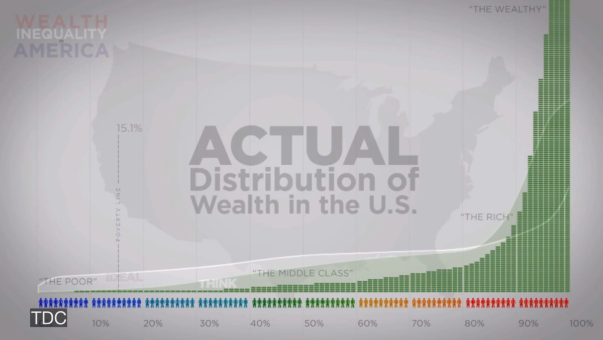
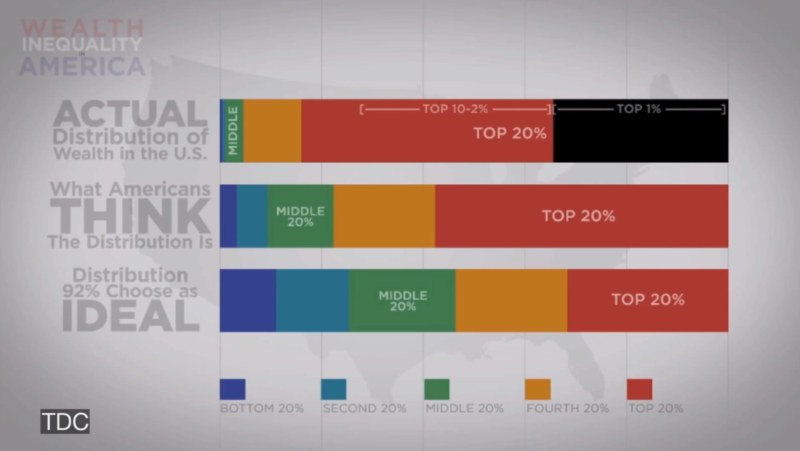
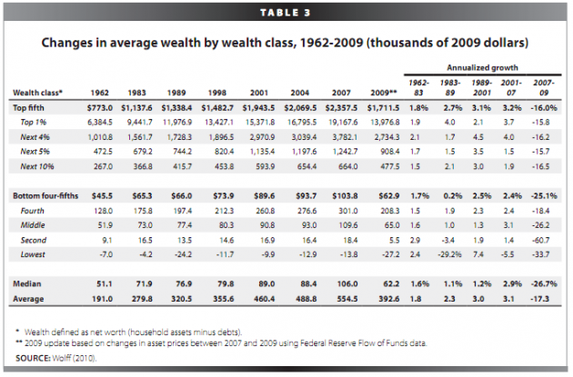
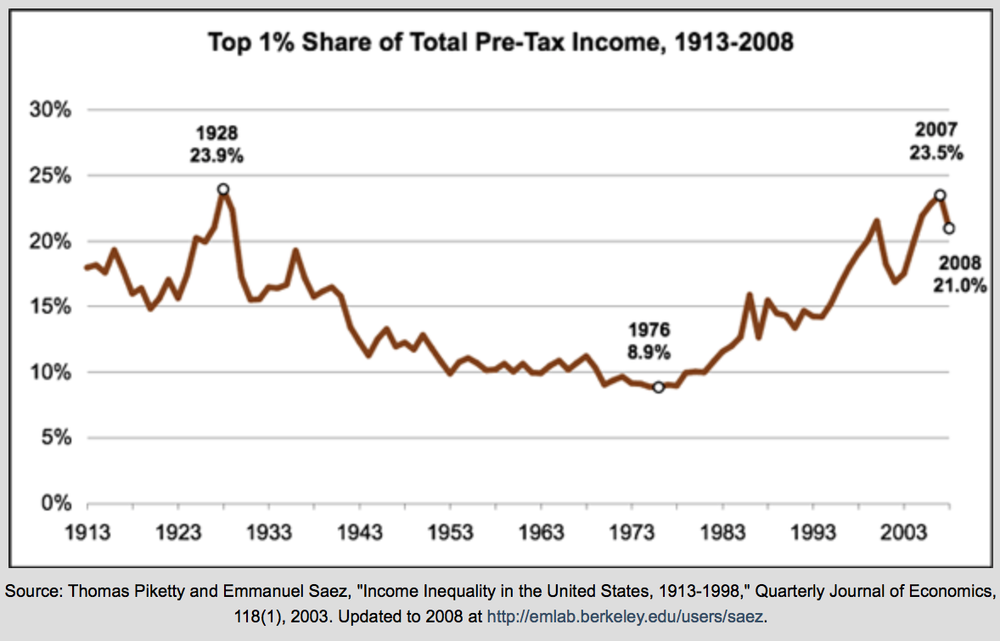
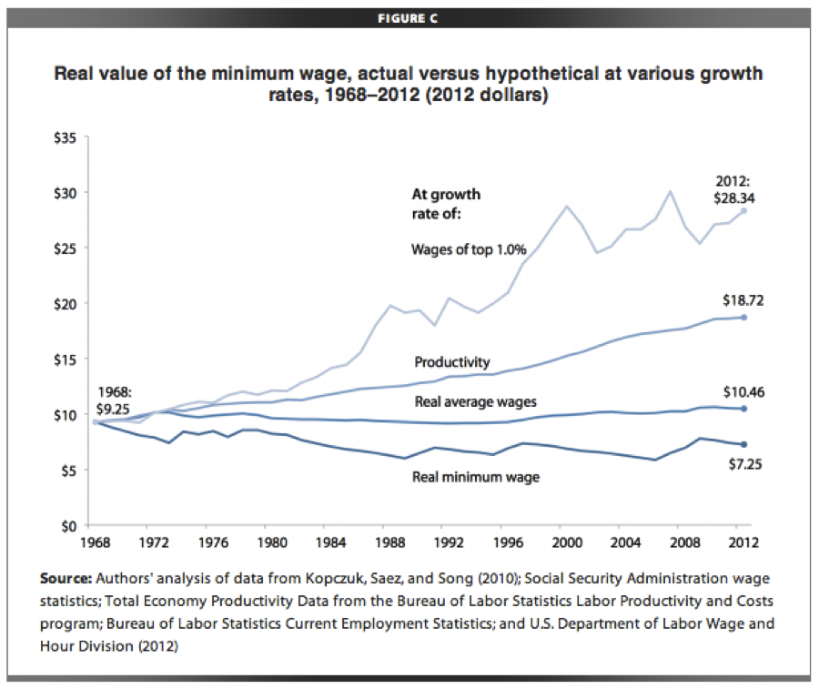

Thanks to technology, people can create more wealth now than ever before, and in twenty years they’ll be able to create more wealth than they can today. Even though this leads to more total wealth, it skews it toward fewer people. This disparity has probably been growing since the beginning of technology, in the broadest sense of the word.
Technology makes wealth inequality worse by giving people leverage and compounding differences in ability and amount of work. It also often replaces human jobs with machines. A long time ago, differences in ability and work ethic had a linear effect on wealth; now it’s exponential. [1] Technology leads to increasing wealth inequality for lots of other reasons, too—for example, it makes it much easier to reach large audiences all at once, and a great product can be sold immediately worldwide instead of in just one area.
Without intervention, technology will probably lead to an untenable disparity—so we probably need some amount of intervention. Technology also increases the total wealth in a way that mostly benefits everyone, but at some point the disparity just feels so unfair it doesn’t matter.
And critically, without a reasonable baseline of access to wealth, there can be no such thing as equality of opportunity.
Wealth inequality today in the United States is extreme and growing, and we talk about it a lot when someone throws a brick through the window of a Google bus. Lots of smart people have already written about this, but here are two images to quickly show what the skew looks like:


[0]
As the following table shows, wealth inequality has been growing in America for some time, not just the last few years. It’s noticeable between the top 20% and bottom 80%, and particularly noticeable between the top 1% and bottom 99%.

And here is a graph that shows the income share of the top 1% over time:

The best thing one can probably say about this widening inequality is that it means we are making technological progress—if it were not happening, something would be going wrong with innovation. But it’s a problem for obvious reasons (and the traditional endings to extreme wealth inequality in a society are never good).
We are becoming a nation of haves and have-nots—of prosperous San Francisco vs. bankrupt Detroit. In San Francisco, the average house costs around $1mm. In Detroit, the average house costs less than a Chevy Malibu made there. [2] And yet, I’d view a $1mm house in San Francisco as a better investment than 20 $50k houses in Detroit. As the relentless march of technology continues, whole classes of jobs lost are never coming back, and cities dependent on those lost jobs are in bad shape. [3]
This widening wealth divide is happening at all levels—people, companies, and countries. And either it will keep going, or innovation will stop.
But it feels really unfair. People seem to be more sensitive to relative economic status than absolute. So even if people are much better off being poor today than king 500 years ago, most people compare themselves to the richest people today, and not the richest people from the past.
And importantly, it really is unfair. Trying to live on minimum wage in the United States is atrocious (http://www.forbes.com/sites/laurashin/2013/07/18/why-mcdonalds-employee-budget-has-everyone-up-in-arms/). That budget, incidentally, assumes that the worker is working two jobs. Even though they’re outputting less value, that person is certainly working harder than I am. We should do more to help people like this.
Real minimum wage has declined, failing to track real averages wages and massively failing to track the wages of the top 1%.

In a world where ideas and networks are what matter, and manufacturing costs trend towards zero, we are going to have to get comfortable with a smaller and smaller number of people creating more and more of the wealth. And we need a new solution for the people not creating most of the wealth—many of the minimum wage jobs are going to get innovated away anyway.
There are no obvious/easy solutions, or this would all be resolved. I don’t have any great answers, so I’ll just throw out some thoughts.
We should assume that computers will replace effectively all manufacturing, and also most “rote work” of any kind. So we have to figure out what humans are better at than computers. If really great AI comes along, all bets are off, but at least for now, humans still have the market cornered on new ideas. In an ideal world, we’d divide labor among humans and computer so that we can both focus on what we’re good at.
There is reason to be optimistic. When the steam engine came along, a lot of people lost their manual labor jobs. But they found other things to do. And when factories came along, the picture looked much worse. And yet, again, we found new kinds of jobs. This time around, we may see lots more programmers and startups.
Better education—in the right areas—is probably the best way to solve this. I am skeptical of many current education startups, but I do believe this is a solvable problem. A rapid change in what and how we teach people is critical—if everything is changing, we cannot keep the same model for education and expect it to continue to work. If large classes of jobs get eliminated, hopefully we can teach people new skills and encourage them to do new things.
Education, unlike a lot of other government spending, is actually an investment—we ought to get an ROI on it in terms of increased GDP (but of course it takes a long time to pay back).
However, if we cannot find a new kind of work for billions of people, we’ll be faced with a new idle class. The obvious conclusion is that the government will just have to give these people money, and there’s been increasing talk about a “basic income”—i.e, any adult who wanted it could have, say, $15,000 a year.
You can run the numbers in a way that sort of makes sense—if we did this for every adult in the US, it’d be about $3.5 trillion a year, or a little more than 20% of our GDP. However, we’d knock out a lot of existing entitlement spending, maybe 10% of GDP. And we’d probably phase it out for people making over a certain threshold, which could cut it substantially.
There are benefits to this—we’d end up helping truly poor people more and middle class people less, and we’d presumably cut a ton of government bureaucracy. We could perhaps end poverty overnight (although, no doubt, anything like this would cause prices to rise). And likely most of this money would be spent, providing some boost to the economy. We could require 10 hours a week of work for the government, or not. A big problem with this strategy is that I don’t think it’ll do much to address the feeling of inequality.
Many people have a visceral dislike to the idea of giving away money (though I think some redistribution of wealth is required to reasonably equalize opportunity), and certainly the default worry is that people would just sit around and waste time on the Internet. But maybe, if everyone knew they had a safety net, we’d get more startups, or more new research, or more novels. Even if only a small percentage of people were productive, in a world where some people create 10,000x more value than others, that’d be ok. The main point I’m trying to make is that we’re likely going to have to do something new and uncomfortable, and we should be open to any new ideas.
But this still doesn’t address the fundamental issue—I believe most people want to be productive. And I think figuring out a much better way to teach a lot more people about technology is likely the best way to make that happen.
Thanks to Nick Sivo for reading a draft of this.
Follow me on Twitter here: http://twitter.com/sama
[0] http://www.youtube.com/watch?v=QPKKQnijnsM
[1] There are lots of other significant factors that cause wealth inequality—for example, having money makes it easier to make more money—but technology is an important and often-overlooked piece
[2] http://www.huffingtonpost.com/2012/07/20/home-cost_n_1690109.html
[3] I was recently in Detroit and was curious to see some of the neighborhoods where you can buy houses for $10-20k. Here are some pictures: